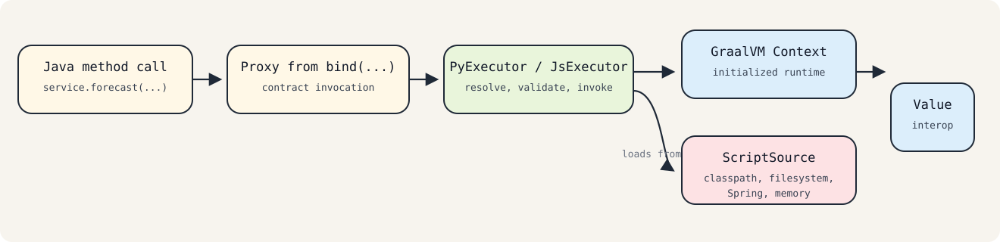

Runtime¶
Overview¶
The runtime layer provides the adapter API on top of GraalVM Polyglot for Python and JavaScript execution.
Its core purpose is simple: bind a Java interface to a guest-language implementation and call it as normal Java code.
Note The runtime adapter is intended for trusted application embedding. It is not a sandboxing framework.
Core Runtime Module¶
runtime/polyglot-adapter is framework-neutral and contains the execution model used by every integration style.
Main Components¶
AbstractPolyglotExecutor: shared proxy binding, source caching, metadata, and common invocation helpersPyExecutor: Python-specific script loading, export resolution, instance caching, and binding validationJsExecutor: JavaScript-specific script loading, function lookup, and binding validationPolyglotHelper: language-specificContextcreation and initializationScriptSourceimplementations: classpath, filesystem, in-memory, and composite resolution
How Runtime Execution Works¶

Context Creation¶
PolyglotHelper creates a language-specific Context.Builder, applies an optional customizer, builds the context, and calls context.initialize(languageId).
Current defaults:
allowAllAccess(true)allowExperimentalOptions(true)- interpreter-only warnings disabled
- Python experimental feature warnings disabled
For Python, context creation uses GraalPyResources.contextBuilder(...) with a virtual file system. For JavaScript, it uses the regular Context.newBuilder(...).
These defaults are designed for application embedding through the adapter, not for hostile multi-tenant sandboxing.
Script Resolution¶
Executors never read the filesystem or classpath directly. They ask ScriptSource whether a logical script exists and open it through a Reader.
Logical names are derived from interface names:
StatsApi->stats_apiForecastService->forecast_service
The actual physical path depends on the chosen ScriptSource.
Binding and Invocation¶
bind(Class<T>) creates a JDK dynamic proxy. Each interface method becomes a guest-language method call with the same method name.
At invocation time:
- the proxy delegates to the executor
- the executor resolves or loads the guest script
- the guest function or object member is invoked through GraalVM
Value - the result is converted back through
Value.as(returnType)
If the guest result is null, the proxy returns null.
Python Runtime Details¶
PyExecutor is convention-driven.
Expected Layout¶
- Java interface:
ForecastService - script:
forecast_service.py - export name:
ForecastService
Supported Export Styles¶
Class-style export:
polyglot.export_value("ForecastService", ForecastService)
Dictionary-style export:
polyglot.export_value(
"ForecastService",
{
"forecast": forecast
}
)
The executor:
- evaluates the script
- resolves the export from polyglot bindings first, then Python bindings
- instantiates callable exports
- reuses dictionary-style exports directly
- caches resolved targets per interface using weak references
validateBinding(...) resolves the instance eagerly, so it is useful at startup when applications want to fail early.
JavaScript Runtime Details¶
JsExecutor uses the same script naming convention but a different binding model.
Expected layout:
- Java interface:
ForecastService - script:
forecast_service.js - functions in JS bindings:
forecast(...)
When a Java interface is validated or called:
- the script is evaluated once and cached by interface
- each interface method must exist as an executable JavaScript function
- method calls are executed from language bindings
The runtime does not currently define a separate JavaScript export object convention comparable to Python's class-style and dictionary-style exports.
Adapter API Surface¶
Applications normally interact with the runtime through:
PyExecutor.create(...)orPyExecutor.createWithContext(...)JsExecutor.create(...)orJsExecutor.createWithContext(...)bind(...)validateBinding(...)metadata()
metadata() returns a lightweight snapshot intended for diagnostics, actuator info, or metrics. It is not a stable serialization format.
Spring Boot Starter¶
runtime/polyglot-spring-boot-starter wraps the runtime adapter for Spring applications.
What It Provides¶
PolyglotAutoConfigurationPolyglotPythonAutoConfigurationPolyglotJsAutoConfigurationSpringPolyglotContextFactoryPolyglotExecutors@EnablePolyglotClientsPolyglotClientRegistrarPolyglotClientFactoryBean- actuator contributors
- Micrometer meter binder
- startup warmup lifecycle
How Users Interact With the Runtime Adapter in Spring¶
- Add the starter and language runtime dependencies.
- Enable the desired languages under
polyglot.*. - Annotate interfaces with
@PolyglotClient. - Enable scanning with
@EnablePolyglotClients. - Inject the generated Spring beans as normal interfaces.
Language resolution rules for @PolyglotClient are enforced by PolyglotClientFactoryBean:
- one explicit language: use that executor
- multiple explicit languages: fail
- no explicit language and exactly one executor available: use it
- no explicit language and multiple executors available: fail and require explicit configuration
Spring Configuration¶
Current configuration properties live under polyglot.*.
Actively used properties include:
polyglot.core.enabledpolyglot.core.fail-fastpolyglot.python.enabledpolyglot.python.resources-pathpolyglot.python.warmup-on-startuppolyglot.js.enabledpolyglot.js.resources-pathpolyglot.js.warmup-on-startuppolyglot.metrics.enabledpolyglot.actuator.info.enabledpolyglot.actuator.health.enabled
Properties currently modeled but not yet fully acted on by startup logic include:
polyglot.core.log-metadata-on-startuppolyglot.python.safe-defaultspolyglot.python.preload-scriptspolyglot.js.preload-scripts
The startup lifecycle currently performs a lightweight no-op warmup only. It does not preload user scripts.
Operational Behavior¶
If actuator is present, the starter can expose:
- a health indicator that reports whether at least one executor is available
- an info contributor with configuration and executor availability
If Micrometer is present, the starter registers gauges for:
- executor enablement
- source cache size
- Python instance cache size
- count of Python bound interfaces
- count of JavaScript loaded interfaces
Current Runtime Limits¶
- The runtime is intended for trusted application embedding, not untrusted sandbox execution.
- JavaScript execution is supported, but JavaScript contract generation is not.
- Warmup initializes the engine but does not currently preload user contracts.
- The binding convention is currently opinionated and name-based; alternative conventions are not implemented yet.